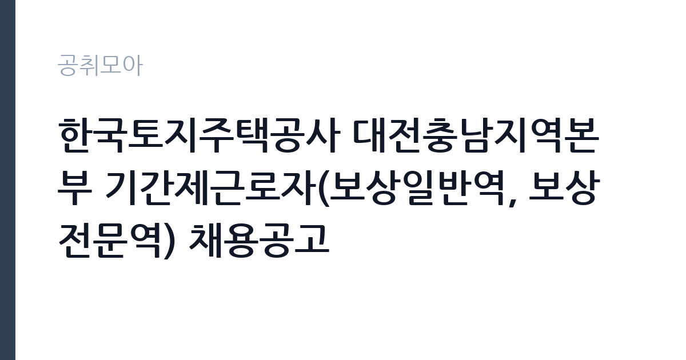

[공공기관] 한국토지주택공사 대전충남지역본부 기간제근로자(보상일반역, 보상전문역) 채용공고
한국토지주택공사 · 대전 · 마감 2026-10-23 (D-22) · 출처 잡알리오

한눈에 보는 모집 조건
| 기관 | 한국토지주택공사 |
|---|---|
| 공고명 | 한국토지주택공사 대전충남지역본부 기간제근로자(보상일반역, 보상전문역) 채용공고 |
| 고용형태 | 기간제 |
| 근무지 | 대전 |
| 게시일 | 2026-10-02 |
| 마감일 | 2026-10-23 (D-22) |
지원자격, 이렇게 읽으세요
- 공공기관 채용공시
- 세부 조건은 원문 공고문 확인
공통 자격으로 세 가지 채용금지 조건이 있습니다. 한국토지주택공사 인사규정과 기간제근로자 운영지침상 채용금지에 해당하지 않아야 하고, 본인과 배우자, 생계를 같이하는 직계존비속이 사업본부 관할 사업지구 안에 토지 등 부동산을 보유하지 않아야 하며, LH와 대한주택공사, 한국토지공사에서 임직원으로 근무한 이력이 없어야 합니다. 보상일반역은 필요 자격증 요건이 없습니다. 보상전문역은 공고일 현재 감정평가사 자격 소지자, 보상 관련 공인민간자격 소지자, 보상전문기관에서 보상 관련 실무 경력 5년 이상인 분 중 하나에 해당해야 합니다. 자세한 사항은 첨부파일의 채용공고문을 참조하시기 바랍니다.
이 공고의 포인트
이 공고의 포인트는 세 가지입니다. 첫째, 일반역은 자격증 없이 지원 가능합니다. 보상 업무에 관심 있는 분께 진입 장벽이 낮습니다. 둘째, 전문역은 대우가 좋습니다. 보도 기준 연봉 6,200만원 수준으로 기간제 중에서는 높은 편입니다. 셋째, 탈락 사유가 명확합니다. 관할 사업지구 내 부동산 보유나 LH 근무 이력 같은 금지 조건에 걸리면 서류에서 제외되므로, 지원 전에 본인과 가족의 부동산 보유 여부를 먼저 확인하셔야 합니다.
전형은 어떻게 진행되나
전형은 서류 심사와 면접으로 진행될 것으로 보이며, 정확한 전형 단계와 제출 서류는 첨부된 채용공고문에서 확인하셔야 합니다. 보상전문역은 자격과 경력 증빙이 핵심이므로 감정평가사 자격증이나 보상 실무 경력증명서를 준비하셨습니다. 보상일반역은 별도 자격 요건이 없어 지원 동기와 기본 소양 중심으로 평가될 가능성이 큽니다.
원문에서 확인한 전형 방식
[공통] o 한국토지주택공사 「인사규정」 제9조(채용금지) 및 「기간제근로자 운영지침」 제15조(채용금지)에 해당되지 아니한 자 o 본인, 배우자, 생계를 같이하는 본인의 직계존비속, 생계를 같이하는 배우자의 직계존비속이 사업본부 관할 사업지구 내 토지 등 부동산을 보유하지 아니한 자 o 한국토지주택공사 「직제규정」 제3조, 제4조, 제5조에 따른 임직원으로 근무한 이력이 없는 자(대한주택공사 및 한국토지공사의 근무 이력도 없어야 채용가능) [보상일반역] o 필요 자격증 요건 없음 [보상전문역] o 공고일 현재 아래의 자격요건 중 하나를 만족하는 자 1. 「감정평가 및 감정평가사에 관한 법률」에 따른 감정평가사 자격 소지자 2. 보상 관련 공인민간자격(「자격기본법」 제19조에 따라 공인된 보상 관련 민간 자격) 소지자 3. 보상전문기관에서 보상 관련 실무 경력이 5년 이상인 자 * 토지보상법 제81조 및 동법 시행령 제43조 ※ 자세한 사항은 첨부파일의 채용공고문 참조
이런 분께 추천해요
- 보상과 감정평가, 토지 분야 경력이 있으신 분
- 자격증 없이 공공기관 기간제로 일해보고 싶으신 분
- 대전과 충남 거주하며 해당 지역본부 관할 지구 근무가 가능하신 분
지원 전 체크리스트
- 관할 사업지구 내 본인과 가족의 부동산 보유 여부를 확인하셨습니다
- LH와 대한주택공사, 한국토지공사 근무 이력이 없는지 확인하셨습니다
- 전문역 지원자는 자격과 경력 증빙 서류를 준비하셨습니다
- 마감일 2026년 10월 23일 이전에 접수를 마치셨습니다
모집 일정과 제출 타이밍
마감일은 2026년 10월 23일입니다. 기간제 채용은 접수 기간이 짧은 편이므로 공고문을 확인하는 대로 서류를 준비하시기 바랍니다. 부동산 보유 여부 확인과 경력증명서 발급에 시간이 걸릴 수 있어 미리 챙기시는 것이 좋습니다. 마감일 당일 접수는 혼잡할 수 있으니 여유 있게 접수하셨습니다.
직무 이해하기: 공공기관
보상 업무는 LH 사업지구 안에서 토지와 건물, 지장물에 대한 보상 절차를 지원하는 실무입니다. 보상일반역은 보상 관련 서류 정리와 민원 응대, 현장 조사 보조 같은 지원 업무를 맡습니다. 보상전문역은 감정평가와 보상 협의, 수용재결 관련 실무를 담당하며 전문성이 요구됩니다. 토지보상법과 관련 법령을 다루는 일이 많아 법령 이해도가 중요하고, 토지 소유자와 보상 협의를 진행하므로 소통 능력도 필요합니다.
자기소개서 작성 팁
자기소개서는 보상 업무와의 연결고리를 중심으로 쓰셨습니다. 전문역은 감정평가사 자격 취득 과정과 보상 실무 경력을 구체적으로 적으셨습니다. 토지보상법 관련 경험이나 협의매수, 수용재결 참여 경험이 있으면 앞에 배치하셨습니다. 일반역은 행정 지원과 민원 응대, 문서 작성 경험을 강조하셨습니다. LH의 주택공급과 보상 업무에 대한 이해를 보여주는 한두 문장을 넣어주시면 좋습니다.
면접 준비 포인트
면접에서는 보상 실무 이해도를 묻습니다. 전문역은 토지보상 절차와 감정평가, 협의와 수용의 차이를 설명할 수 있어야 합니다. 보상 과정에서 토지 소유자와 갈등이 생기면 어떻게 대응할지를 묻는 질문이 나올 수 있습니다. 일반역은 기본 소양과 민원 응대 태도, 문서 작업 능력을 중심으로 평가될 가능성이 큽니다. 관할 사업지구에 대한 이해와 출퇴근 계획도 정리해 가셨습니다.
급여·근무조건 읽는 법
보수는 LH 기간제근로자 임금체계가 적용됩니다. 참고로 2026년 9월 언론 보도에 따르면 LH 보상인력의 급여 조건은 보상전문역 연봉 6,200만원, 보상일반역 4,100만원 수준으로 유지된다고 전해졌습니다(언론 보도 기준). 이번 지역본부 채용의 실제 보수액과 지급 방식은 첨부된 채용공고문에서 확인하셔야 하며, 기본급 외 수당과 4대 보험 적용 여부는 공고문과 담당 부서를 통해 확인하시기 바랍니다.
자주 묻는 질문
- 보상일반역과 보상전문역의 차이는 무엇인가요
보상일반역은 필요 자격증 요건이 없는 지원 업무 중심 자리이고, 보상전문역은 감정평가사 자격이나 보상 관련 민간자격, 보상전문기관 5년 이상 실무 경 중 하나가 필요한 전문 자리입니다. 보수 수준도 전문역이 높게 책정됩니다. 본인의 자격에 맞는 분야로 지원하셨습니다. - 부동산 보유 제한은 무엇을 말하나요
본인과 배우자, 생계를 같이하는 직계존비속이 사업본부 관할 사업지구 안에 토지 등 부동산을 보유하면 지원할 수 없다는 조건입니다. 보상 업무의 공정성을 위한 조치이므로 지원 전에 가족 범위까지 확인하셔야 합니다. - LH 근무 이력이 있으면 지원이 안 되나요
한국토지주택공사 직제규정에 따른 임직원으로 근무한 이력이 있으면 지원할 수 없으며, 대한주택공사와 한국토지공사 근무 이력도 포함됩니다. 과거 LH에서 기간제로 일한 경험이 있으신 분은 공고문을 꼼꼼히 확인하시기 바랍니다.
함께 보면 좋은 공고
[공공기관] 한국토지주택공사 경기남부지역본부 기간제근로자(보상일반역, 보상전문역) 채용공고 — 마감 2026-10-16[공공기관] 한국토지주택공사 광주전남지역본부 기간제근로자(보상일반역, 보상전문역) 채용공고 — 마감 2026-10-16[공공기관] 한국토지주택공사 세종특별본부 기간제근로자(보상일반역, 보상전문역) 채용공고 — 마감 2026-10-19출처: 잡알리오 공개정보를 바탕으로 공취모아가 정리한 안내글입니다. 모집 조건·일정은 변경될 수 있으니 지원 전 반드시 원문 공고문을 확인하세요. 본 글은 정보 제공용이며 합격을 보장하지 않습니다.